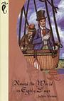
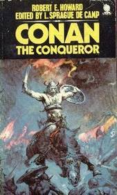

5: Ivanhoe

Ratings : 🌟 3.7/5
Author : Walter Scott
Genre :Historical novelAdventurechivalric romance
Year Published : 1819
Pages : 401
Brief:
Protagonist Wilfred of Ivanhoe is disinherited by his father Cedric of Rotherwood for supporting the Norman King Richard and for falling in love with the Lady Rowena, a ward of Cedric and descendant of the Saxon Kings of England. Cedric planned to have Rowena marry the powerful Lord Athelstane, a pretender to the Crown of England by his descent from the last Saxon King, Harold Godwinson. Ivanhoe accompanies King Richard on the Crusades, where he is said to have played a notable role in the Siege of Acre; and tends to Louis of Thuringia, who suffers from malaria.
The book opens with a scene of Norman knights and prelates seeking the hospitality of Cedric. They are guided there by a pilgrim, known at that time as a palmer. Also returning from the Holy Land that same night, Isaac of York, a Jewish moneylender, seeks refuge at Rotherwood. Following the night's meal, the palmer observes one of the Normans, the Templar Brian de Bois-Guilbert, issue orders to his Saracen soldiers to capture Isaac.
An imaginary letter from the Rev. Dr Dryasdust from Laurence Templeton who has found the materials for the following tale mostly in the Anglo-Norman Wardour Manuscript. He wishes to provide an English counterpart to the preceding Waverley novels, in spite of various difficulties arising from the chronologically remote setting made necessary by the earlier progress of civilisation south of the Border.
4: Treasure Island

Ratings : 🌟 3.8/5
Author : Robert Louis Stevenson
Genre :AdventureFictionYoung adult Literature
Year Published : 1883
Pages : 292
Brief:
Stevenson conceived the idea of Treasure Island (originally titled: The Sea Cook: A Story for Boys)[1] from a map of an imaginary, romantic island idly drawn by Stevenson and his stepson Lloyd Osbourne on a rainy day in Braemar, Scotland. Stevenson had just returned from his first stay in America, with memories of poverty, illness, and adventure (including his recent marriage), and a warm reconciliation between his parents had been established. Stevenson himself said in designing the idea of the story that, "it was to be a story for boys; no need of psychology or fine writing; and I had a boy at hand to be a touchstone. Women were excluded and then I had an idea for Long John Silver from which I promised myself funds of entertainment; to take an admired friend of mine, to deprive him of all his finer qualities and higher graces of temperament, and to leave him with nothing but his strength, his courage, his quickness, and his magnificent geniality, and to try to express these in terms of the culture of a raw tarpaulin".
3: Around the World in Eighty Days
Ratings : 🌟 3.9/5
Author : Jules Verne
Genre :Adventure Novel
Year Published : 1873
Pages : 237
Brief:
In Jules Verne’s “Around the World in 80 Days”, Phileas Fogg, a solitary British gentleman of the Victorian era wagers that he can circumnavigate the globe in under 80 days. With his french manservant, Passepartout, Fogg embarks on a great adventure taking him through Egypt, India, the South Pacific, San Francisco and the Great Plains of the United States. But will he succeed and collect on his bets? One of the best-loved works by the French adventure and science-fiction writer Jules Verne.
In Jules Verne’s “Around the World in 80 Days”, Phileas Fogg, a solitary British gentleman of the Victorian era wagers that he can circumnavigate the globe in under 80 days. With his french manservant, Passepartout, Fogg embarks on a great adventure taking him through Egypt, India, the South Pacific, San Francisco and the Great Plains of the United States. But will he succeed and collect on his bets? One of the best-loved works by the French adventure and science-fiction writer Jules Verne.
2: Kidnapped

Ratings : 🌟 3.8/5
Author : Robert Louis Stevenson
Genre :Adventure NovelHistorical Novel
Year Published : 1886
Pages : 136
Brief:
Kidnapped is a historical fiction adventure novel by Scottish author Robert Louis Stevenson, written as a boys' novel and first published in the magazine Young Folks from May to July 1886. The novel has attracted the praise and admiration of writers as diverse as Henry James, Jorge Luis Borges, and Hilary Mantel.[1] A sequel, Catriona, was published in 1893.
The narrative is written in English with some dialogue in Lowland Scots, a Germanic language that evolved from an earlier incarnation of English.
Kidnapped is set around real 18th-century Scottish events, notably the "Appin murder", which occurred in the aftermath of the Jacobite rising of 1745. Many of the characters are real people, including one of the principals, Alan Breck Stewart. The political situation of the time is portrayed from multiple viewpoints, and the Scottish Highlanders are treated sympathetically.
1: Conan the Conqueror
Ratings : 🌟 4.1/5
Author : Robert E. Howard
Genre :Adventure NovelSwordSorcery
Year Published : 1950
Pages : 255
Brief:
Of the 21 Conan the Barbarian tales that Robert E. Howard (1906-1936) completed in his all-too-brief lifetime, Hour of the Dragon was the only novel-length story. It may also be the very best of the series, crafted when the legendary pulp writer was working at the height of his powers. Conan is a huge swordsman fighting both natural and supernatural foes in a time-lost world known as the Hyborian Age. At this point in his bloody career, Conan is the middle-aged king of the ancient kingdom of Aquilonia. He must fight one final battle to save the known world from a resurrected sorcerer named Xaltotun. Only the fabled Heart of Ahriman can destroy Xaltotun, and Conan must embark on an epic quest to retrieve the Heart. Howard hammered out every word as if he had actually lived through it himself, and in doing so forged a crimson masterpiece of heroic fantasy.
It was one of the last Conan stories published before Howard's suicide, although not the last to be written.[1] The novel was first published in serial form in the December 1935 through April 1936 issues of the pulp magazine Weird Tales. The first book edition was published by Gnome Press in hardcover in 1950.